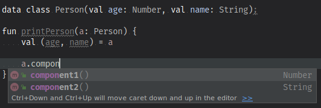

Created: 2019-09-02 Mo 17:55
logos of languages
github & twitter @adimit
computational linguistics
itdesign since March
$JOB bei $CORP?Was macht ein Typensystem?
Memory-Safety: ein typengechecktes Programm soll nicht durch Speicherkorruption abstürzen können.
Aber: es soll Programmierung nicht in ihrer Kreativität einschränken
Typensysteme können bei der Architektur eines Programms helfen:
val (reference immutability)data class Customer(
val name: String,
val email: String,
val company: String)
val positiveNumbers = list.filter { it > 0 }
// list.filter({element -> element > 0})
strings.filter { it.length == 5 }
.sortedBy { it }
.map { it.toUpperCase() }
data class Person(val age: Number, val name: String);
fun printPerson(a: Person) {
val (age, name) = a
println("Meet ${name}, ${age} years old.")
}
In Wahrheit, ein schmutziger Trick:

fun <T> MutableList<T>.swap(i: Int, j: Int) {
val tmp = this[i] // 'this' corresponds to the list
this[i] = this[j]
this[j] = tmp
}
// …
fun <T> foo(list: MutableList<T>) {
list.swap(0, 1)
}
fun <T> swap(me: MutableList<T>, i: Int, j: Int) {
val tmp = me[i]
me[i] = me[j]
me[j] = tmp
}
sealed class L<out T> {
object Empty: L<Nothing>()
data class Cons<T>(val h: T): L<T>()
}
fun L<Int>.sum(): Int = add(0)
private tailrec fun L<Int>.add(n0: Int): Int = when (this) {
is L.Empty -> n0
is L.Cons -> this.add(this.h)
}
var-Zuweisungval-Zuweisung funktioniert wie final in JavaTypen kann man als Mengen von Werten betrachten
Int\[\{ x | x \in \mathcal{N} \} = \{ 1, 2, 3, \ldots\}\]
enum class Colour { red, green }\[ \{ \mathrm{red}, \mathrm{green} \} \]
Any wird von allen Werten bewohntNothing wird von keinem Wert bewohntUnit hat genau einen Bewohner: UnitEin Algebraischer Datentyp ist eine Komposition aus anderen Typen.
data class Triple<A, B, C>(val a: A, val b: B, c: C)
Inheritance lässt sich in Kotlin beschränken.
sealed class Tree<T> {
data class Leaf<T>(val t: T): Tree<T>()
data class Branch<T>(
val l: Tree<T>,
val r: Tree<T>
): Tree<T>()
}
fun <T> traverse(t: Tree<T>): List<T> {
return when (t) {
is Tree.Leaf -> listOf(t.t)
is Tree.Branch -> traverse(t.l) + traverse(t.r)
}
}
Rework this section. Needs to have a more formal introduction to have the actual rules
Abstraktion:
\[ f = 42 + (27 * 42) \] \[ f' = \lambda x. x + (27 * x) \] \[ f'' = \lambda x. \lambda y. x + (y * x) \]
Konversion: \[ f''(12) = \lambda y. 12 + (y * 12) \] \[ f''(12)(2) = 12 + (2 * 12) = 36\]
fun <A, B, C> ((B) -> C)
.compose(f: (A) -> B): (A) -> C = { this(f(it)) }
fun List<Int>.sum(): Int = TODO()
fun List<String>.parse(): List<Int> = TODO()
val parseAndSum = List<Int>::sum
// (λA.B.C. ((B) -> C).compose(f: (A) -> B): (A) -> C)
// (List<String>) (List<Int>) (Int)
.compose<List<String>, List<Int>, Int>(
List<String>::parse)
// ((List<String>) -> List<Int>)
// .compose(f: (List<Int>) -> Int): (List<String>) -> Int
| Type | Kind |
|---|---|
Int, String, Object |
* |
| List<A>, Maybe<A> | * → * |
| List<Int>, Maybe<Object> | * → * |
| List<Maybe<T>> | * → * |
fun λF.A.B. F<A> → ((a) → b) → F<B>A, B?F?(* → *) → *F aussehen, damit map funktioniert?Option Monad, wie ∀a. Maybe a in HaskellEither MonadValidated Applicative, Aggregation von Validierung und Fehlerwerten
Eine Typenklasse (type class) T a definiert eine Reihe von Funktionen über einen Wert vom Typ a.
Typenklassen abstrahieren über ad hoc polymorphism, auch overloading.
class Equality a where
equals :: a -> a -> Bool
instance (Equality a) => Equality ([a]) where
equals [] [] = True
equals [] _ = False
equals _ [] = False
equals (x:xs) (y:ys) = equals x y && equals xs ys
Grundsätzlich unterscheiden wir
Ord, Num, Show, …Functor, Monoid, Applicative, Monad, …sort :: Ord a => [a] -> [a]
reverse :: [a] -> [a]
f :: (Ord a) => [a] ->[a]
f l = (reverse . sort) l
main = print $ f [1,2,3]
class (Eq a) => Ord a where
compare:: a -> a -> Ordering
instance (Eq a) => Ord Int where
compare a b = -- …
sort :: Ord a => [a] -> [a]
reverse :: [a] -> [a]
f :: (Ord a) => [a] ->[a]
f l = (λd:Ord a) (reverse . sort d) l
d Verzeichnis aller Instanzen von compared wird vom Compiler injiziertfun <A> f(l: List<Maybe<A>>): List<A> // valid!
fun <A, B> map(l: List<A>, f: (A) -> B): List<B> //valid!
A hat Kind *.List und Maybe haben Kind * → * (Type Constructor)fun <F, A, B> map(l: F<A>, f: (A) -> B): F<B> // invalid!
* sein!* → * abstrahieren!interface Eqty<T> {
fun eq(a: T, b: T): Boolean
}
object StringEqtyInstance : Eqty<String> {
override fun eq(a: String, b: String): Boolean
= a.toLowerCase() == b.toLowerCase()
}
fun <T> List<T>.find(t: T, eqty: Eqty<T>): List<T>
= flatMap { eqty.run {
if (eq(t, it)) listOf(it) else listOf() }
}
fun fooList(l: List<String>)
= l.find("FOO", StringEqtyInstance)
sealed class Maybe<out T> {
object No: Maybe<Nothing>()
data class Yes<T>(val just: T): Maybe<T>()
fun <B> map(f: (T) -> B): MaybeOf<B> = when (this) {
is No -> No
is Yes -> Yes(f(just))
}
}
interface Functor<F> {
fun <A, B> F<A>.map(f: (A) -> B): F<B>
}
interface Functor<F> {
fun <A, B> Kind<F, A>.map(f: (A) -> B): Kind<F, B>
}
interface Kind<out F, out A>
class ForMaybe private constructor()
typealias MaybeOf<T> = Kind<ForMaybe, T>
sealed class Maybe<out T> : MaybeOf<T> {
object No: Maybe<Nothing>()
data class Yes<T>(val just: T): Maybe<T>()
fun <B> map(f: (T) -> B): MaybeOf<B> = when (this) {
is No -> No
is Yes -> Yes(f(just))
}
companion object
}
fun <A> MaybeOf<A>.fix(): Maybe<A> = this as Maybe<A> // 😱
interface MaybeFunctorInstance : Functor<ForMaybe> {
override fun <A, B> Kind<ForMaybe, A>
.map(f: (A) -> B): Kind<ForMaybe, B> {
return fix().map { f(it) }
}
}
fun Maybe.Companion.functor(): MaybeFunctorInstance
= object : MaybeFunctorInstance { }
fun <F> incrementAll(
f: Functor<F>,
a: Kind<F, Int>
): Kind<F, Int> = f.run { a.map { it + 1 } }
incrementAll(Maybe.functor(), Maybe.Yes(1)).fix() // just 2
incrementAll(Maybe.functor(), Maybe.No).fix() // No
Created: [2019-08-29 Do 22:12] Ref: notes.org Random:
ok, great, but where's the data source? What happens when retrieval doesn't go as planned. (Advanced: can we parallelize retrieval, or do we need to depend on the first call to know the second one?)
The example could be skills creation: we get a list of strings. Get all the skills, get the matching ids. Also the strings (skill names) that didn't match. Then create new entries for each of these strings (bonus points: in parallel), get their ids. Join the lists (bonus points: in the original order) and execute a last request to write the new list.
Some inspiration: